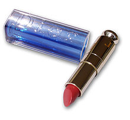
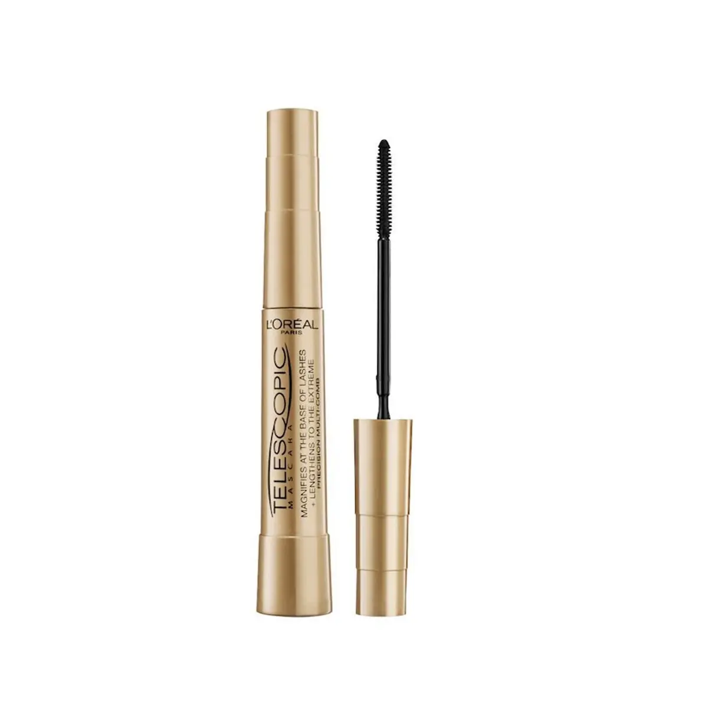
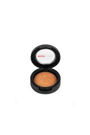
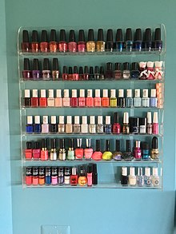
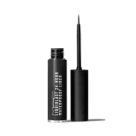
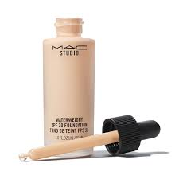
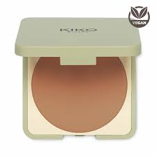
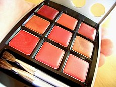
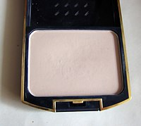
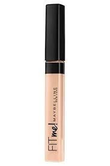

Site İçeriği
Makyaj Malzemeleri Sayfası İçerikleri
Ruj
Ruj, dudağa renk vermesi için kullanılan ve içinde
pigmentler, yağlar, balmumu ve yumuşatıcı maddeler
içeren bir kozmetik ürünüdür. Çeşitli renklerde,
ışıltılı, simli olabilir. Makyaj ürünlerinin en
çok tercih edilen ürünüdür. Dudak kalemi,
dudak parlatıcısı ve dudak renklendiricisi ile
beraber kullanılır. Ruj kelimesi Fransızcada
"kırmızı" anlamına gelen "rouge" kelimesinden gelmektedir.
Rujun içinde ozokerit, lanolin ve ceserin
mumları, balmumu, kastor yağı, beyaz mineral yağı, lanolin yağı,
hidrolenmiş bitkisel yağlar, oleil alkol ve bromo
asitler bulunmaktadır. Dünyada her üç kadından biri
ruj kullanmaktadır ve hayatı boyunca bir kadın
ortalama altı gram ruj yutmaktadır.

Başa Dön
Rimel
Rimel (Fransızca: Rimmel (marka adından)) veya maskara,
kirpik, takma kirpik ve kirpik uzantıları'nı kıvırmak ve
daha uzun göstermek için fırça ile sürülen boyalı sürme'dir.
Maskara çeşitli şekillerde üretilir: sıvı, kremsi ve kuru.
Ayrıca farklı tonlarda ve renklerde mevcuttur.
Rimeller, kirpiklerin hacmini, şeklini ve uzunluğunu vurgulamak,
artırmak için tasarlanmıştır. Rimelin en popüler şekli,
ucunda bir fırça aplikatörü bulunan çubuklu tüplerdir.
Rimeller göz kapağı tutkalı, far, göz kalemi ile beraber uygulanır.

Başa Dön
Far
Far, göz kapağına renk vermesi için kullanılan çeşitli renklerde,
ışıltılı ya da simli olabilen makyaj ürünü. Toz, bilyalı, likit,
krem çeşitleri bulunmaktadır. Göze dumanlı veya aydınlık bir görüntü verir.
Tekli veya pek çok renk bir arada bulunabilir.

Başa Dön
Oje
Oje (tırnak cilası veya tırnak minesi de denir) insanın doğal
tırnaklarını veya takma tırnak'ları süslemek ve tırnak plakalarını
korumak için tırnaklara sürülen bir çeşit cila'dır. Formülü
süsleyici etkilerini arttırmak ve çatlama veya soyulmayı
önlemek için defalarca kere değiştirilip geliştirilmiştir.
Oje, organik bir polimer ile ona renk ve yüzey dokusu veren
başka bileşenlerin bir karışımıdır.Tırnak cilaları tüm renk
tonlarında bulunur ve tırnak sanatı, manikür'lerde ve
pedikür'lerde önemli rol oynar.

Başa Dön
Eyeliner
Eye liner veya eyeliner, gözleri belirginleştirmek için kullanılan
bir kozmetiktir . Göz(ler)in çevresine uygulanır.
Genellikle çeşitli estetik etkiler yaratmak için kullanılır.

Başa Dön
Fondöten
Renk pigmentli krem, bilinen adıyla fondöten cilde eşit,
homojen bir renk oluşturmak, kusurları örtmek ve bazen
doğal cilt tonunu değiştirmek için yüze uygulanan sıvı
veya pudra makyajdır. Bazı temeller ayrıca daha karmaşık
kozmetikler için nemlendirici, güneş koruyucu, sıkılaştırıcı
veya baz katman olarak da işlev görür. Vücuda uygulanan temel,
genellikle "vücut boyama" veya "vücut makyajı" olarak adlandırılır.

Başa Dön
Bronzer
Yüz hatlarının daha belirgin olmasına yardımcı olan bronzer,
özellikle elmacık kemiklerinin belirginleştirilmesinde tercih edilir.
Cilde bronzluk vermesinin dışında yüzü boyutlandırmak,
gölgelendirmek ve cilt rengini ısıtmak için de kullanılabilen
bu ürünün ten rengine uygun tonda seçilmesi büyük önem arz eder.

Başa Dön
Allık
Allık, yanağa sürülen ve adını verdiği kırmızılık nedeniyle alan
kozmetik ürünüdür.Allık genellikle beyaz tene uygun bir pembe
rengi ve pembe tonlarından oluşur. Kırmızıya kaçan pembeden
kırmızıya ve çok uçuk pembeye kadar pek çok pembe tonunun
yanı sıra tercih edilen başka bir tonu da şeftali rengi,
kayısı rengi gibi turuncuya kaçan pembedir. Bunun yanı
sıra son yıllarda yükselen bronz ten akımıyla ortaya çıkan
bronz, karamel rengi ve altın pırıltılı allık oldukça modadır.
Allığın İngilizcesi olan blush kelimesinin başka bir anlamı ise kızarmaktır.
Allık genellikle kompakt adı verilen sıkıştırılmış şekliyle tercih edilir.
Bunun yanı sıra sıkıştırılmamış olan toz allıklar da vardır.
Allığın kazandığı biçimlerden biri de krem allıktır. Köpük allıklar da vardır.
Ayrıca stik allıklar da piyasada bulunmaktadır. Bunlar kremsi veya şeffaf jel
kıvamındadır. Sıvı ve bilyalı allıklar da vardır. Bir başka tercih edilen
allık biçimi ise yuvarlak kaplara konulan top allıklardır.
Genellikle toplar farklı renk tonlarında olur.

Başa Dön
Pudra
Pudra, makyaj malzemesi olarak kullanılan bir çeşit kozmetik ürün.
Pudra eskiden pirinç unundan yapılırken günümüzde çok daha başkamaddelerden
yararlanmaktadırlar. Nişasta, talk, kalsiyum karbonat,
çinko ya da titan oksitleri gibi maddeler bugün güzellik malzemelerinin
içinde yer almaktadır.Bu maddeler özel olarak renklendirilip
güzel kokularla karıştırıldıktan sonra piyasaya çıkarılmaktadır.

Başa Dön
Kapatıcı
Kapatıcılar makyaj tutkunlarının en sevdiği ürünler arasında yer alır.
Bu ürünler, genellikle yüzde kusur olarak görülen lekeleri,
göz altında oluşan yorgunluk izlerini, sivilce ve siyah noktaları
kapatmak için kullanılır. Ürünler çok yoğun bir yapıya sahiptir.
Bu nedenle fondöten gibi bütün yüze uygulanması önerilmez.
Kapatıcılar, fondötenin kapatmakta güçlük çektiği küçük
bölgelerdeki kusurların hızlıca kapanmasında etkilidir.
Pek çok kapatıcı çeşidine rastlamak mümkün. Kullanılacak
olan kapatıcı çeşidi, ciltteki kusurların büyüklüğüne ve yapısına
göre değişebilir.

Başa Dön